TD 23 - Cours : Gestion des processus⚓︎
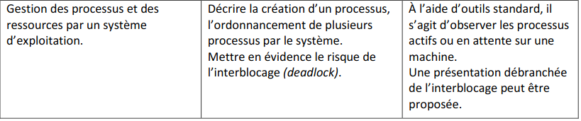
Introduction⚓︎
Dans les années 1970 les ordinateurs personnels étaient incapables d'exécuter plusieurs tâches à la fois : il fallait attendre qu'un programme lancé se termine pour en exécuter un autre.
Les systèmes d'exploitations récents (GNU/Linux, macOS, iOS, Android, Windows...) permettent d'exécuter des tâches "simultanément". En effet, la plupart du temps, lorsque l'on utilise un ordinateur, plusieurs programmes sont exécutés "en même temps" : par exemple, on peut très bien ouvrir simultanément un navigateur Web, un traitement de texte, un IDE Python, un logiciel de musique (sans parler de tous les programmes exécutés en arrière-plan) ...
Ces programmes en cours d'exécution s'appellent des processus. Une des tâches du système d'exploitation est d'allouer à chacun des processus les ressources dont il a besoin en termes de mémoire, entrées-sorties ou temps d'accès au processeur, et de s'assurer que les processus ne se gênent pas les uns les autres.
Pourtant, on rappelle qu'un programme n'est qu'une suite d'instructions machine exécutées l'une après l'autre par le processeur et qu'un processeur n'est capable d'exécuter qu'une seule instruction à la fois.
Pour rappel, voici les étapes d'exécution d'une instruction.
- l'instruction pointée par le pointeur d'instruction est chargée en mémoire
- Le pointeur d'instruction est incrémenté vers l'adresse suivante
- l'instruction est décodée
- l'instruction est exécutée
Comment est-il alors possible que plusieurs programmes soient exécutés en même temps ?
Processus⚓︎
Qu'est-ce qu'un processus ?⚓︎
Il ne faut pas confondre programme et processus :
- Un programme est un fichier binaire (on dit aussi un exécutable) contenant des instructions machines que seul le processeur peut comprendre.
- Un processus est un programme en cours d'exécution, autrement dit le phénomène dynamique lié à l'exécution d'un programme par l'ordinateur.
Ainsi, lorsque nous cliquons sur l'icône d'un programme (ou lorsque nous exécutons une instruction dans la console pour lancer un programme), nous provoquons la naissance d'un ou plusieurs processus liés au programme que nous lançons.
Un processus est donc une instance d'un programme auquel est associé :
- du code
- des données/variables manipulées
- des ressources : processeur, mémoire, périphériques d'entrée/sortie (voir paragraphe suivant)
Il n'est d'ailleurs pas rare qu'un même programme soit exécuté plusieurs fois sur une machine au même moment en occupant des espaces mémoires différents : par exemple deux documents ouverts avec un traitement de texte, ou trois consoles distinctes... qui correspondent à autant d'instances du même programme et donc à des processus différents.
Observer les processus⚓︎
Il est très facile de voir les différents processus s'exécutant sur une machine.
Sous GNU/Linux, on peut utiliser la commande ps (comme process, la traduction anglaise de processus) pour afficher les informations sur les processus (sous windows : talklist). En passant des options à cette commande on peut obtenir des choses intéressantes.
Par exemple, en exécutant dans un terminal la commande ps -aef, on peut visualiser tous les processus en cours sur notre ordinateur :
Création d'un processus⚓︎
Un processus peut être créé :
- au démarrage du système
- par un autre processus
- par une action d'un utilisateur (lancement d'un programme)
Sous GNU/Linux, un tout premier processus est créé au démarrage (c'est le processus 0 ou encore Swapper). Ce processus crée un processus souvent appelé init qui est le fils du processus 0. Ensuite, à partir de init, les autres processus nécessaires au fonctionnement du système sont créés. Ces processus créent ensuite eux-mêmes d'autres processus, etc.
Un processus peut créer un ou plusieurs processus, ce qui aboutit à une structure arborescente comme nous allons le voir maintenant.
PID et PPID⚓︎
La commande précédente permet de voir que chaque processus est identifié par un numéro : son PID (pour Process Identifier). Ce numéro est donné à chaque processus par le système d'exploitation.
On constate également que chaque processus possède un PPID (pour Parent Process Identifier), il s'agit du PID du processus parent, c'est-à-dire celui qui a déclenché la création du processus. En effet, un processus peut créer lui même un ou plusieurs autres processus, appelés processus fils.
Observation des processus⚓︎⚓︎
Sous Linux, on peut observer les processus et leur état en ligne de commande.
Pour tester, cela on peut utiliser : terminal linux en ligne
Voici quelques commandes utiles pour observer les processus :
ps|: elle permet d'afficher la liste des processus en cours. (Pour avoir des informations sur les options taper man ps) Pour lister tous les processus :ps - eftop: Pour observer en temps réels les différents processus.(penser à utiliser man top)
la commandefpermet de gérer les colonnes affichées.-
kill: elle permet de tuer un processus en lui envoyant un signal de fin.- 15 pour arrêter le processus proprement
- 9 pour arrêter immédiatement le processus.
exemple d'utilisation :
kill -15 7654pour tuer proprement le processus dePID 7564
Exercice
Dans un nouvel onglet ouvrir : terminal linux en ligne
- créer un premier terminal :
- utiliser les commandes de l'année précédentes :
ls, cd, touch, cat - pour déterminer le nom d'utilisateur :
whoami - créer un fichier vide
test.py:touch test.py - éditer le fichier
test.pyavec la commande :nano test.py- y écrire le code suivant :
for a in range(100000): print(a) - pour sortir de l'éditeur : Ctrl+X, puis Y, puis Enter pour confirmer le nom
- y écrire le code suivant :
- lancer le programme avec :
python3 test.py
- utiliser les commandes de l'année précédentes :
- créer un second fichier
p2.pyavec le code suivant :
while True: pass- le lancer
- Il tourne sans fin. Pour l'arrêter : Ctrl+C
- vérifier la présence dans le dossier des fichiers créés, avec
ls - ouvrir un second terminal puis :
- dans ce second terminal lancer python3 sans nom de fichier
- dans le premier terminal taper
ps -ef - repérer le PID du processus python3 et le tuer avec la commande kill -9 (voir syntaxe au dessus)
-
ouvrir un troisième terminal
- dans ce troisième terminal lancer la commande
top - modifier l'affichage pour faire apparaître le PPID (taper f, puis sélectionner/ déplacer avec les touches curseur. Revenir à l'affichage avec Esc)
- dans ce troisième terminal lancer la commande
-
Enfin ouvrir des terminaux supplémentaires pour en avoir au moins 5 et lancer dans les terminaux :
- 1 aucun processus
- 1 avec nano
- 1 avec python3
- 1 avec python3 lançant p2.py
- 1 avec top
-
observer les processus et essayer de les tuer avec la commande kill à partir du premier terminal
- recommencer en relançant les processus et tuer les processus avec le terminal lançant top(puis commande k)
Gestion des processus et des ressources⚓︎
Exécution concurrente⚓︎
Les systèmes d'exploitation modernes sont capable d'exécuter plusieurs processus "en même temps". En réalité ces processus ne sont pas toujours exécutés "en même temps" mais plutôt "à tour de rôle". On parle d'exécution concurrente car les processus sont en concurrence pour obtenir l'accès au processeur chargé de les exécuter.
Remarque : Sur un système multiprocesseur, il est possible d'exécuter de manière parallèle plusieurs processus, autant qu'il y a de processeurs. Mais sur un même processeur, un seul processus ne peut être exécuté à la fois.
On peut voir assez facilement cette exécution concurrente. Considérons les deux programmes Python suivants :
progA.py
import time
for i in range(100):
print("programme A en cours, itération", i)
time.sleep(0.01) # pour simuler un traitement avec des calculs
progB.py
import time
for i in range(100):
print("programme B en cours, itération", i)
time.sleep(0.01) # pour simuler un traitement avec des calculs
⚓︎
import time
for i in range(100):
print("programme B en cours, itération", i)
time.sleep(0.01) # pour simuler un traitement avec des calculs
En ouvrant un Terminal, on peut lancer simultanément ces deux programmes avec la commande
$ python progA.py & python progB.py &
Le caractère
&qui suit une commande permet de lancer l'exécution en arrière plan et de rendre la main au terminal.
Le shell indique alors dans la console les PID des processus correspondant à l'exécution de ces deux programmes (ici 9154 et 9155) puis on constate grâce aux affichages que le système d'exploitation alloue le processeur aux deux programmes à tour de rôle :
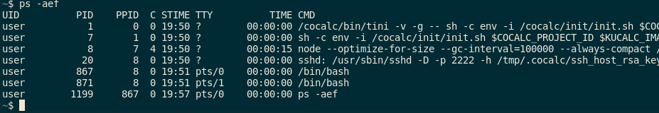
Accès concurrents aux ressources⚓︎
Une ressource est une entité dont a besoin un processus pour s'exécuter. Les ressources peuvent être matérielles (processeur, mémoire, périphériques d'entrée/sortie, ...) mais aussi logicielles (variables).
Les différents processus se partagent les ressources, on parle alors d'accès concurrents aux ressources. Par exemple,
- les processus se partagent tous l'accès à la ressource "processeur"
- un traitement de texte et un IDE Python se partagent la ressource "clavier" ou encore la ressource "disque dur" (si on enregistre les fichiers), ...
- un navigateur et un logiciel de musique se partagent la ressource "carte son", ...
C'est le système d'exploitation qui est chargé de gérer les processus et les ressources qui leur sont nécessaires, en partageant leur accès au processeur. Nous allons voir comment tout de suite !
États d'un processus⚓︎
Au cours de son existence, un processus peut se retrouver dans trois états :
- état élu : lorsqu'il est en cours d'exécution, c'est-à-dire qu'il obtient l'accès au processeur
- état prêt : lorsqu'il attend de pouvoir accéder au processeur
- état en bloqué : lorsque le processus est interrompu car il a besoin d'attendre une ressource quelconque (entrée/sortie, allocation mémoire, etc.)
Il est important de comprendre que le processeur ne peut gérer qu'un seul processus à la fois : le processus élu.
En pratique, lorsqu'un processus est créé il est dans l'état prêt et attend de pouvoir accéder au processeur (d'être élu). Lorsqu'il est élu, le processus est exécuté par le processeur mais cette exécution peut être interrompue :
- soit pour laisser la main à un autre processus (qui a été élu) : dans ce cas, le processus de départ repasse dans l'état prêt et doit attendre d'être élu pour reprendre son exécution
- soit parce que le processus en cours a besoin d'attendre une ressource : dans ce cas, le processus passe dans l'état bloqué.
Lorsque le processus bloqué finit par obtenir la ressource attendue, il peut théoriquement reprendre son exécution mais probablement qu'un autre processus a pris sa place et est passé dans l'état élu. Auquel cas, le processus qui vient d'être "débloqué" repasse dans l'état prêt en attendant d'être à nouveau élu.
Ainsi, l'état d'un processus au cours de sa vie varie entre les états prêt, élu et bloqué comme le résume le schéma suivant :
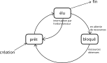
Lorsqu'un processus est interrompu, il doit pouvoir reprendre à l'endroit même où il a été interrompu. Pour cela, le système d'exploitation conserve pour chaque processus créé une zone mémoire (appelée PCB, pour Process Control Bloc, ou bloc de contrôle du processus) dans laquelle sont stockées les informations sur le processus : son PIB, son état, la valeur des registres lors de sa dernière interruption, la zone mémoire allouée par le processus lors de son exécution, les ressources utilisées par le processus (fichiers ouverts, connexions réseaux en cours d'utilisation, etc.).
Ordonnancement⚓︎
C'est le système d'exploitation qui attribue aux processus leurs états élu, prêt et bloqué. Plus précisément, c'est l'ordonnanceur (un des composants du système d'exploitation) qui réalise cette tâche appelée ordonnancement des processus.
L'objectif de l'ordonnanceur est de choisir le processus à exécuter à l'instant \(t\) (le processus élu) et déterminer le temps durant lequel le processeur lui sera alloué.
Ce choix est à faire parmi tous les processus qui sont dans l'état prêt, mais lequel sera élu ? et pour combien de temps ? Des algorithmes d'ordonnancement sont utilisés et il en existe plusieurs selon la stratégie utilisée. On en présente quelques-uns ci-dessous.
Exemple : Les processus \(P_1(53)\), \(P_2(17)\), \(P_3(68)\) et \(P_4(24)\) arrivent dans cet ordre à \(t=0\) :
Ordonnancement First Come First Served (FCFS)⚓︎
Principe : Les processus sont ordonnancés selon leur ordre d'arrivée ("premier arrivé, premier servi" en français)
Cela signifie que \(P_1\), \(P_2\), \(P_3\) et \(P_4\) ont besoin de respectivement 53, 17, 68 et 24 unités de temps pour s'exécuter.
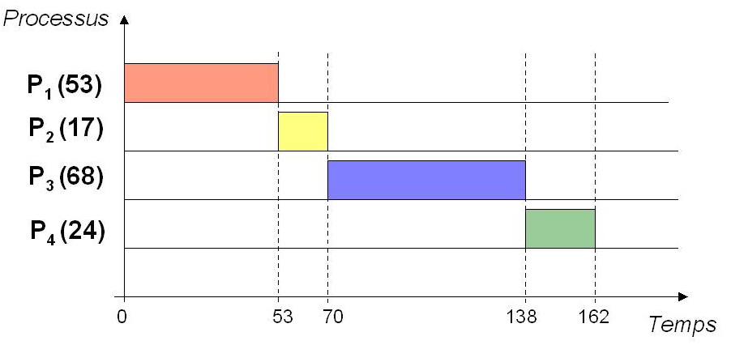
Ordonnancement Shortest Job First (SJF)⚓︎
Principe : Le processus dont le temps d'exécution est le plus court est ordonnancé en premier.
Exemple : \(P_1\), \(P_2\), \(P_3\) et \(P_4\) arrivent à \(t=0\) :
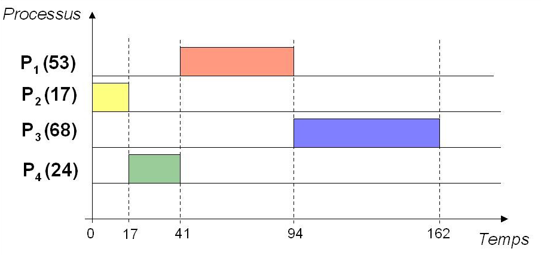
Ordonnancement Shortest Remaining Time (SRT)⚓︎
Principe : Le processus dont le temps d'exécution restant est le plus court parmi ceux qui restent à exécuter est ordonnancé en premier.
Exemple : \(P_3\) et \(P_4\) arrivent à \(t=0\) ; \(P_2\) à \(t=20\) ; \(P_1\) à \(t=50\) :
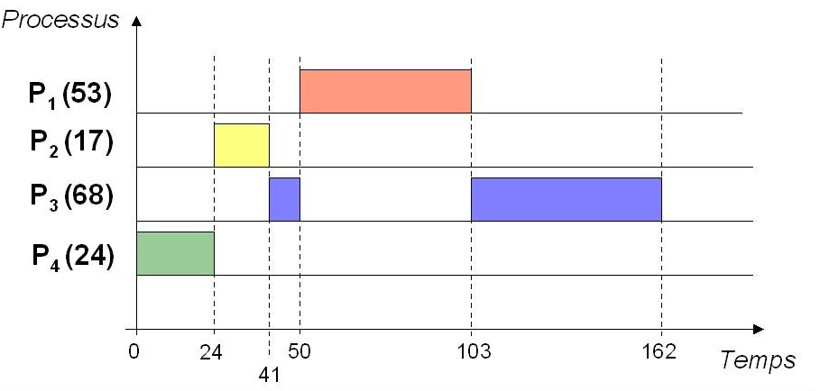
Ordonnancement temps-partagé (Round-Robin)⚓︎
Principe : C'est la politique du tourniquet : allocation du processeur par tranche (= quantum \(q\)) de temps.
Exemple : quantum \(q = 20\) et \(n = 4\) processus
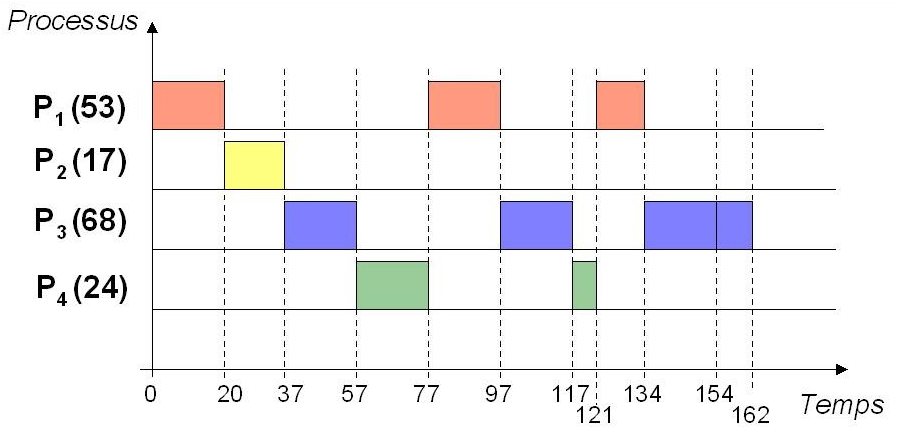
Dans ce cas, s'il y a \(n\) processus, chacun d'eux obtient le processeur au bout de \((n-1)\times q\) unités de temps au plus
Ordonnancement à priorités statiques⚓︎
Principe : Allocation du processeur selon des priorités statiques (= numéros affectés aux processus pour toute la vie de l'application)
Exemple : priorités \((P_1, P_2, P_3, P_4) = (3, 2, 0, 1)\) où la priorité la plus forte est 0 (attention, dans certains systèmes c'est l'inverse : 0 est alors la priorité la plus faible)
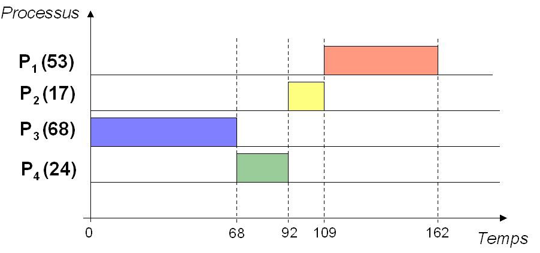
Problèmes liés à l'accès concurrent aux ressources⚓︎
Les processus se partagent souvent une ou plusieurs ressources, et cela peut poser des problèmes.
Problèmes de synchronisation : illustration avec Python⚓︎
Exemple d'une variable partagée⚓︎
Prenons l'exemple d'une variable (= ressource logicielle) partagée entre plusieurs processus. Plus précisément, considérons un programme de jeu multi-joueur dans lequel une variable nb_pions représente le nombre de pions disponibles pour tous les joueurs.
Une fonction prendre_un_pion() permet de prendre un pion dans le tas commun de pions disponibles, s'il reste au moins un pion évidemment.
On va se mettre dans la situation où il ne reste plus qu'un pion dans le tas commun et on suppose que deux joueurs utilisent la fonction prendre_un_pion(), ce qui conduit à la création de deux processus p1 et p2, chacun correspondant à un joueur.
Avec Python, on peut utiliser le module multiprocessing pour créer des processus. Le programme Python pions.py suivant permet de réaliser la situation de jeu décrite :
from multiprocessing import Process, Value
import time
def prendre_un_pion(nombre):
if nombre.value >= 1:
time.sleep(0.001) # pour simuler un traitement avec des calculs
temp = nombre.value
nombre.value = temp - 1 # on décrémente le nombre de pions
if __name__ == '__main__':
# création de la variable partagée initialisée à 1
nb_pions = Value('i', 1)
# on crée deux processus
p1 = Process(target=prendre_un_pion, args=[nb_pions])
p2 = Process(target=prendre_un_pion, args=[nb_pions])
# on démarre les deux processus
p1.start()
p2.start()
# on attend la fin des deux processus
p1.join()
p2.join()
print("nombre final de pions :", nb_pions.value)
Explications :
- Le
if __name__ = '__main'__:permet de ne créer qu'une seule fois les processusp1etp2qui suivent (c'est nécessaire sous Windows, pas sous GNU/Linux car la création des processus ne se fait pas de la même manière, mais cela reste conseillé ne serait-ce que pour des raisons de compatibilité), on n'en dira pas davantage ici car cela dépasse le niveau de ce cours. - On a utilisé la classe
Processdu modulemultiprocessingpour instancier deux processusp1etp2.- L'argument
targetest le nom de la fonction qui sera exécutée par le processus : ici les deux processus doivent exécuter la même fonctionprendre_un_pion() - L'argument
argsest une liste des arguments passés à la fonction cible : ici il s'agit de la variablenb_pionsqui est partagée par les deux processus.
- L'argument
- Par défaut, deux processus ne partagent pas de données en mémoire : on ne peut pas donc pas utiliser
nb_pionscomme une variable globale. Il faut utiliser la classeValuedu modulemultiprocessingpour créernb_pionsdans une mémoire partagée entre les processus. L'argument'i'indique quenb_pionsest un entier (signé) et le deuxième argument est la valeur initiale de la variable, ici 1. - La fonction
prendre_un_pion()prend un nombre en paramètre et décrémente sa valeur d'une unité si le nombre est au moins égal à 1.- Lors de l'exécution de la fonction par les deux processus, l'argument en question sera l'objet
nb_pionsde la classeValueet on accède à sa valeur avec l'attributvalue. - On a ajouté une temporisation permettant de simuler d'autres calculs qui pourraient avoir lieu (par exemple, des instructions de mise à jour du nombre de pions des joueurs)
- Lors de l'exécution de la fonction par les deux processus, l'argument en question sera l'objet
- Les dernières lignes permettent de démarrer les deux processus et attendre qu'ils soient terminés pour afficher la valeur finale de
nb_pions.
Si on exécute ce programme, les deux processus p1 et p2 sont exécutés et on s'attend au comportement suivant (en supposant qu'il ne reste qu'un seule pion dans le tas commun) :
- l'un des deux est élu en premier, par exemple
p1, et exécute la fonctionprendre_un_pion(), le nombre de pions est égal à 1 doncnb_pionsest décrémenté d'une unité et prend donc la valeur 0, le processusp1est terminé ; - le processus
p2, qui était en attente, est ensuite élu, et comme le nombre de pions est désormais égal à 0 rien ne se passe etp2termine.
Ainsi, le premier joueur a pu prendre le pion restant et le second s'est retrouvé coincé, et la valeur finale de nb_pions vaut 0.
Et pourtant, il est tout à fait possible que les choses ne se passent pas ainsi ! En effet, en exécutant plusieurs fois le programme pions.py dans un terminal, on obtient parfois une valeur finale égale à 0 et parfois égale à -1 :
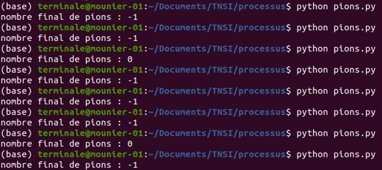
C'est un résultat très perturbant non ? Expliquons pourquoi !
Pour cela, on peut ajouter quelques instructions d'affichage pour suivre ce qu'il se passe. On obtient le script pions_v2.py suivant :
from multiprocessing import Process, Value
import time
def prendre_un_pion(nombre, numero_processus):
print(f"début du processus {numero_processus}")
if nombre.value >= 1:
print(f"processus {numero_processus} : étape A")
time.sleep(0.001) # pour simuler un traitement avec des calculs
print(f"processus {numero_processus} : étape B")
temp = nombre.value
nombre.value = temp - 1 # on décrémente le nombre de pions
print(f"nombre de pions restants à la fin du processus {numero_processus} : {nombre.value}")
if __name__ == '__main__':
# création de la variable partagée initialisée à 1
nb_pions = Value('i', 1)
# on crée deux processus
p1 = Process(target=prendre_un_pion, args=[nb_pions, 1])
p2 = Process(target=prendre_un_pion, args=[nb_pions, 2])
# on démarre les deux processus
p1.start()
p2.start()
# on attend la fin des deux processus
p1.join()
p2.join()
print("nombre final de pions :", nb_pions.value)
Explications :
- Lors de la création des processus, on passe un deuxième argument à la fonction
prendre_un_pion(), le numéro du processus : 1 pourp1et 2 pourp2. - Cela permet d'afficher dans cette fonction le numéro du processus à des endroits stratégiques : au début, à l'entrée dans le
if, juste avant de décrémenter le nombre de pions et à la fin du processus.
En exécutant pions_v2.py dans un terminal, on obtient ce genre de choses :
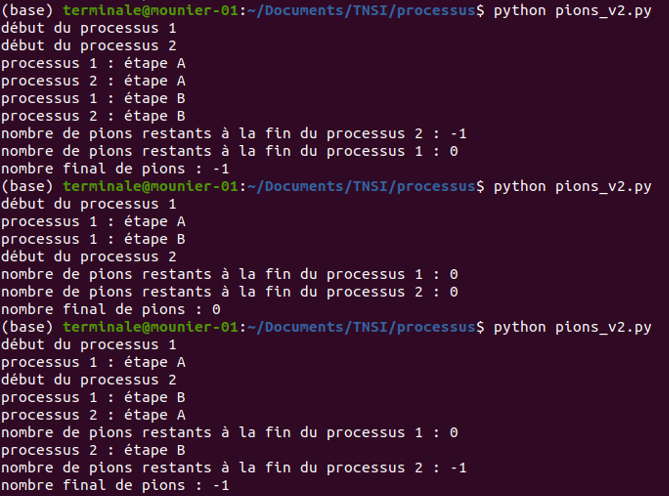
Analysons la première exécution du programme.
- le processus
p1est élu en premier (affichage de "début du processus 1") mais est de suite interrompu par l'ordonnanceur qui élitp2(affichage de "début du processus 2") - puis c'est de nouveau le processus
p1qui a la main et il rentre dans leif(affichage de "processus 1 : étape A") mais est interrompu à nouveau et l'ordonnanceur donne la main àp2qui rentre aussi dans leif(affichage de "processus 2 : étape A") : en effet, à ce stade le nombre de pions n'a pas encore été décrémenté parp1car il a été interrompu avant l'étape B, et doncp2a pu entrer dans leifpuisque la conditionnombre.value >= 1est toujours vraie à ce moment là !! - ensuite le processeur est alloué alternativement à
p1etp2(voir les affichages restants) mais le mal est fait puisque les deux processus sont désormais chacun entrés dans leif, ils vont chacun décrémenter le nombre de pions d'une unité et chacun des deux joueurs aura pioché un pion alors qu'il n'y en avait qu'un seul au départ !
Vous remarquerez que la troisième exécution du programme met en évidence le même problème car les deux processus ont chacun pu entrer dans le
if, même si l'ordre des instructions exécutées après n'est pas tout à fait le même.
Si on analyse la seconde exécution du programme qui donne le comportement souhaité, on constate que p1 a eu suffisamment de temps pour décrémenter le nombre de pions (qui vaut désormais 0) avant que p2 ne fasse le test nombre.value >= 1 et se rende compte que cette condition est fausse. Dans ce cas, seul le premier joueur a pas pu piocher un pion.
Heureusement, on peut éviter le problème mis en évidence dans l'exemple précédent.
Comment éviter les problèmes de synchronisation ?⚓︎
On va utiliser ce qu'on appelle un verrou : un verrou est objet partagé entre plusieurs processus mais qui garantit qu'un seul processus accède à une ressource à un instant donné.
Concrètement, un verrou peut être acquis par les différents processus, et le premier à faire la demande acquiert le verrou. Si le verrou est détenu par un autre processus, alors tout autre processus souhaitant l'obtenir est bloqué jusqu'à ce qu'il soit libéré.
Le module multiprocessing de Python propose un objet Lock() correpondant à un verrou. Deux méthodes sont utilisées :
- la méthode
.acquire()permet de demander le verrou (le processus faisant la demande est bloqué tant qu'il ne l'a pas obtenu) - la méthode
.release()permet de libérer le verrou (il pourra alors être obtenu par un autre processus qui en fait la demande)
On peut alors régler le problème de l'exemple précédent avec le script pions_v3.py suivant dans lequel on a laissé les affichages pour bien suivre :
from multiprocessing import Process, Value, Lock
import time
def prendre_un_pion(v, nombre, numero_processus):
print(f"début du processus {numero_processus}")
v.acquire() # acquisition du verrou
if nombre.value >= 1:
print(f"processus {numero_processus} : étape A")
time.sleep(0.001)
print(f"processus {numero_processus} : étape B")
temp = nombre.value
nombre.value = temp - 1
v.release() # verrou libéré
print(f"nombre de pions restants à la fin du processus {numero_processus} : {nombre.value}")
if __name__ == '__main__':
# création de la variable partagée initialisée à 1
nb_pions = Value('i', 1)
# verrou partagé par les deux processus
verrou = Lock()
# on crée deux processus
p1 = Process(target=prendre_un_pion, args=[verrou, nb_pions, 1])
p2 = Process(target=prendre_un_pion, args=[verrou, nb_pions, 2])
# on démarre les deux processus
p1.start()
p2.start()
# on attend la fin des deux processus
p1.join()
p2.join()
print("nombre final de pions :", nb_pions.value)
En exécutant (plusieurs fois) ce script dans un terminal on constate que le nombre final de pions est toujours égal à 0.
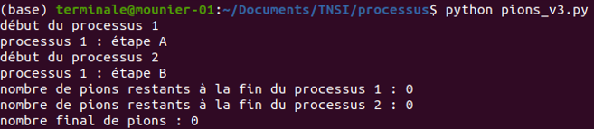
Avant de faire le test du if, le processus essaye d'acquérir le verrou avec v.acquire(). Dès qu'il est acquis, le processus a la garantie qu'il est le seul à pouvoir exécuter le code jusqu'à l'instruction v.release(). Cette portion de code protégée s'appelle une section critique. Cela ne veut pas dire que le processus détenant le verrou ne peut pas être interrompu, mais il ne le sera pas par un processus qui est essaie d'acquérir le même verrou.
def prendre_un_pion(v, nombre, numero_processus):
v.acquire()
# début section critique
if nombre.value >= 1:
time.sleep(0.001)
temp = nombre.value
nombre.value = temp - 1
# fin de la section critique
v.release()
Si vous analysez l'affichage précédent dans le terminal, on voit d'ailleurs que p1 est entré en section critique (affichage "processus 1 : étape A") mais est interrompu, puis c'est p2 qui a la main (affichage "début processus 2") mais il va se retrouver bloquer à l'instruction v.acquire() puisque c'est p1 qui détient le verrou. Lorsque p1 reprendra la main, il pourra exécuter ses instructions jusqu'à v.release() sans être interrompu par p2 (alors nb_pions sera décrémenté d'une unité). Lorsque p1 libère le verrou, p2 pourra alors l'obtenir, exécuter sa section critique et constater que la condition nombre.value >= 1 est fausse : le deuxième joueur ne pourra alors pas prendre de pion.
Nous terminons en voyant que l'utilisation de verrous n'est pas sans risque car elle peut engendrer des problèmes d'interblocage.
Risque d'interblocage⚓︎
Les interblocages (deadlock en anglais) sont des situations de la vie quotidienne. L'exemple classique est celui du carrefour avec priorité à droite où chaque véhicule est bloqué car il doit laisser le passage au véhicule à sa droite.

En informatique l'interblocage peut également se produire lorsque plusieurs processus concurrents s'attendent mutuellement. Ce scénario peut se produire lorsque plusieurs ressources sont partagées par plusieurs processus et l'un d'entre eux possède indéfiniment une ressource nécessaire pour un autre.
Ce phénomène d'attente circulaire, où chaque processus attend une ressource détenue par un autre processus, peut être provoquée par l'utilisation de plusieurs verrous.
Considérons le script interblocage.py suivant dans lequel on a créé deux verrous v1 et v2 utilisés par deux fonctions f1 et f2 exécutées respectivement par deux processus p1 et p2. Le processus p1 essaie d'acquérir d'abord v1 puis v2 tandis que le processus p2 essaie de les acquérir dans l'ordre inverse.
from multiprocessing import Process, Lock
import time
import os
def f1(v1, v2):
print("PID du processus 1:", os.getpid())
for i in range(100):
time.sleep(0.001)
v1.acquire()
v2.acquire()
print("processus 1 en cours, itération ", i)
v2.release()
v1.release()
def f2(v1, v2):
print("PID du processus 2:", os.getpid())
for i in range(100):
time.sleep(0.001)
v2.acquire()
v1.acquire()
print("processus 2 en cours, itération ", i)
v1.release()
v2.release()
if __name__ == '__main__':
# création de deux verrous
v1 = Lock()
v2 = Lock()
# création de deux processus
p1 = Process(target=f1, args=[v1, v2])
p2 = Process(target=f2, args=[v1, v2])
# on démarre les deux processus
p1.start()
p2.start()
# on attend la fin des deux processus
p1.join()
p2.join()
Si on exécute ce programme, il y a de grandes chances de se retrouver bloqué. Par exemple, dans le cas de l'exécution suivante :
- le processus
p1est élu : il s'exécute jusqu'à l'acquisition dev1mais avant la tentative d'acquisition dev2, puis est interrompu - le processus
p2est à son tour élu : il s'exécute et acquiertv2qui est toujours libre, puis bloque sur l'acquisition dev1(qui est détenu parp1). - le processus
p1reprend la main et bloque sur l'acquisition dev2(détenu parp2).
Chaque processus détient un verrou et attend l'autre : ils sont en interblocage et l'attente est infinie.
On peut lancer (plusieurs fois si nécessaire) le script à partir du terminal et constater que l'interblocage a lieu très souvent.
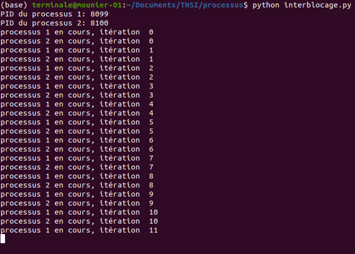
Il n'y a alors pas d'autres choix que d'interrompre les processus en interblocage, par exemple avec la commande kill.
Cependant, ce problème a lieu ici car les deux processus essaie d'acquérir les verrous dans l'ordre contraire. Si l'ordre d'acquisition est le même pour les processus, le problème n'a plus lieu (n'hésitez pas à tester !).
De manière générale, dans des problèmes complexes les situations d'interblocage sont difficiles à détecter et il se peut très bien que le programme se comporte bien pendant toute une phase de tests mais bloque lors d'une exécution ultérieure puisque l'on ne peut pas prévoir l'ordonnancement des processus.
Simulation d'interblocage⚓︎⚓︎
Robosomes créé par Alain BUSSER , Sébastien HOARAU (Voir ici : Robosomes - IREM de la réunion
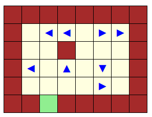
Le jeu robosomes se joue à un seul joueur sur une grille rectangulaire. Chaque case peut être
- soit vide
- soit couverte par un obstacle fixe (en noir comme aux mots croisés)
- soit couverte d’un pion pouvant bouger, appelé robot
Chaque robot peut être tourné dans l’une des quatre directions cardinales ◀▲▶▼. Les robots peuvent bouger tous en même temps de l’une des façons suivantes :
- G : tous les robots tournent vers leur gauche (de 90°) en même temps
- D : tous les robots tournent vers leur droite (de 90°) en même temps
- A : les robots qui peuvent avancer d’une case, le font. Un robot peut avancer d’une case s’il n’y a pas d’obstacle sur cette case et si aucun robot ne s’apprête à aller sur cette case.
Les cases du bord de la grille sont toutes couvertes d’obstacles fixes, à l’exception de l’une d’entre elles appelée « sortie ». Lorsqu’un robot est sur la case de sortie, tourné vers l’extérieur de la grille, il quitte le jeu et n’est plus soumis aux ordres donnés. Le but du jeu est de faire sortir tous les robots de la grille, en écrivant un mot dans l’alphabet A,G,D, appelé programme et que les robots interpréteront comme décrit ci-dessus.
Voici quelques exemples :
Un premier exemple pour se mettre en route.
Et pour les systèmes multiprocesseurs ?⚓︎
Les ordinateurs actuels possèdent généralement plusieurs processeurs, ce qui permet à plusieurs processus d'être exécutés parallèlement : un par processeur. Ce parallélisme permet bien évidemment une plus grande puissance de calcul.
Pour répartir les différents processus entre les différents processeurs, on distingue deux approches :
- l'approche partitionnée : chaque processeur possède un ordonnanceur particulier et les processus sont répartis entre les différents ordonnanceurs
- l'approche globale : un ordonnanceur global est chargé de déterminer la répartition des processus entre les différents processeurs
L'ordonnancement des processus des systèmes d'exploitation actuels est bien plus complexe que les quelques algorithmes évoqués dans ce cours, et cela dépasse largement le cadre du programme de NSI. Si vous souhaitez en savoir plus, voici néanmoins une vidéo intéressante (en français) sur l'ordonnancement du noyau Linux : https://www.youtube.com/watch?v=uCGe5WWd1OI&t=195s&ab_channel=Vitonimal.
Bilan⚓︎
- Un programme en cours d'exécution s'appelle un processus. Les systèmes d'exploitation récents permettent d'exécuter plusieurs processus simultanément.
- En réalité, ces processus sont exécutés à tour de rôle par le système d'exploitation qui est chargé d'allouer à chacun d'eux les ressources dont il a besoin en termes de mémoire, entrées-sorties ou temps d'accès au processeur, et de s'assurer que les processus ne se gênent pas les uns les autres.
- Au cours de leur vie, les processus varient entre trois états : élu si le processus est exécuté par le processeur, prêt si le processus est prêt à être exécuté, et bloqué si le processus est en attente d'une ressource.
- C'est l'ordonnanceur qui est chargé de définir l'ordre dans lequel les processus doivent être exécutés par le processeur. Ce choix se fait grâce à des algorithmes d'ordonnancement.
- Les processus se partagent les différentes ressources, on parle d'accès concurrent aux ressources. Ce partage des ressources n'est pas sans risque et peut conduire à des problèmes de synchronisation. Ces problèmes peuvent être évités en utilisant un verrou, qui permet à un processus de ne pas être interrompu dans sa section critique par un autre processus demandant le même verrou.
- L'utilisation de plusieurs verrous peut entraîner des interblocages, c'est-à-dire des situations où chaque processus attend une ressource détenue par un autre, conduisant à une attente cyclique infinie. L'ordre d'acquisition des verrous est important mais pas toujours évident à écrire dans le cas de problèmes complexes.
Exercice 1 : Algorithmes d'ordonnancement⚓︎
Soient les différents processus suivants :
| Processus | Date d'arrivée | Durée de traitement |
|---|---|---|
| \(P_1\) | 0 | 3 |
| \(P_2\) | 1 | 6 |
| \(P_3\) | 3 | 4 |
| \(P_4\) | 6 | 5 |
| \(P_5\) | 8 | 2 |
Application de plusieurs algorithmes⚓︎
Q1 : Donnez le diagramme de Gantt pour l'exécution de ces différents processus en utilisant successivement les algorithmes FCFS, RR (quantum = 2 unités de temps) et SRT.
Performances des algorithmes d'ordonnancement⚓︎
On définit les métriques suivantes :
- le temps de séjour (ou d'exécution) (ou de rotation) d'un processus : c'est la différence entre la date de fin d'exécution et la date d'arrivée : \(\(T_{\text{sej}} = \text{date fin d'exécution} - \text{date d'arrivée}\)\)
- le temps d'attente d'un processus : c'est la différence entre le temps de séjour et la durée du processus : \(\(T_{\text{att}} = T_{\text{sej}} - \text{durée du processus}\)\)
- le rendement d'un processus : c'est le quotient entre la durée du processus et le temps de séjour : \(\(\text{rendement} = \dfrac{\text{durée du processus}}{T_{\text{sej}}}\)\)
Q2 : Pour chacun des trois algorithmes, calculez le temps de séjour, le temps d'attente et le rendement de chaque processus.
Q3 : Quel vous semble être le meilleur des trois algorithmes dans notre exemple ? Expliquer.
Exercice 2⚓︎
cet exercice est issu du sujet 2021 du bac NSI
Partie A
Cette partie est un questionnaire à choix multiples (QCM). Pour chacune des questions, une seule des quatre réponses est exacte. Le candidat indiquera sur sa copie le numéro de la question et la lettre correspondant à la réponse exacte. Aucune justification n’est demandée. Une réponse fausse ou une absence de réponse n’enlève aucun point.
1) Parmi les commandes ci-dessous, laquelle permet d’afficher les processus en cours d’exécution ?
a. dir
b. ps
c. man
d. ls
2) Quelle abréviation désigne l’identifiant d’un processus dans un système d’exploitation de type UNIX ?
a. PIX
b. SIG
c. PID
d. SID
3) Comment s’appelle la gestion du partage du processeur entre différents processus ?
a. L’interblocage
b. L’ordonnancement
c. La planification
d. La priorisation
4) Quelle commande permet d’interrompre un processus dans un système d’exploitation de type UNIX ?
a. stop
b. interrupt
c. end
d. kill
Partie B
1) Un processeur choisit à chaque cycle d’exécution le processus qui doit être exécuté. Le tableau ci-dessous donne pour trois processus P1, P2, P3 :
-
la durée d’exécution (en nombre de cycles),
-
l’instant d’arrivée sur le processeur (exprimé en nombre de cycles à partir de 0),
-
le numéro de priorité.
Le numéro de priorité est d’autant plus petit que la priorité est grande. On suppose qu’à chaque instant, c’est le processus qui a le plus petit numéro de priorité qui est exécuté, ce qui peut provoquer la suspension d’un autre processus, lequel reprendra lorsqu’il sera le plus prioritaire.
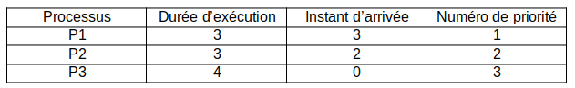
Reproduire le tableau ci-dessous sur la copie et indiquer dans chacune des cases le processus exécuté à chaque cycle.
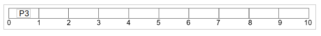
2) On suppose maintenant que les trois processus précédents s’exécutent et utilisent une ou plusieurs ressources parmi R1, R2 et R3. Parmi les scénarios suivants, lequel provoque un interblocage ? Justifier.
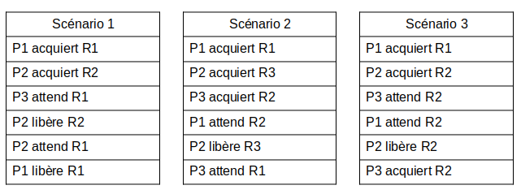
Partie C
Dans cette partie, pour une meilleure lisibilité, des espaces sont placées dans les écritures
binaires des nombres. Il ne faut pas les prendre en compte dans les calculs.
Pour chiffrer un message, une méthode, dite du masque jetable, consiste à le combiner avec une
chaîne de caractères de longueur comparable.
Une implémentation possible utilise l’opérateur XOR (ou exclusif) dont voici la table de vérité :
| a | b | a XOR b |
|---|---|---|
| 0 | 0 | 0 |
| 0 | 1 | 1 |
| 1 | 0 | 1 |
| 1 | 1 | 0 |
Dans la suite, les nombres écrits en binaire seront précédés du préfixe 0b.
Q1. Pour chiffrer un message, on convertit chacun de ses caractères en binaire (à l’aide du format Unicode), et on réalise l’opération XOR bit à bit avec la clé.
Après conversion en binaire, et avant que l’opération XOR bit à bit avec la clé n’ait été
effectuée, Alice obtient le message suivant :
m = 0b 0110 0011 0100 0110
a. Le message m correspond à deux caractères codés chacun sur 8 bits : déterminer quels sont ces caractères. On fournit pour cela la table ci-dessous qui associe à l’écriture hexadécimale d’un octet le caractère correspondant (figure 2). Exemple de lecture : le caractère correspondant à l’octet codé 4A en hexadécimal est la lettre J.
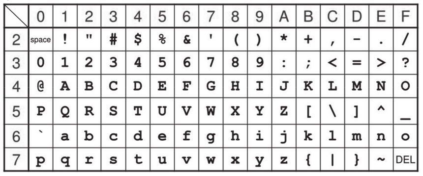
Pour chiffrer le message d’Alice, on réalise l’opération XOR bit à bit avec la clé suivante :
k = 0b 1110 1110 1111 0000
Donner l’écriture binaire du message obtenu.
Q2.
a. Dresser la table de vérité de l’expression booléenne suivante :
(a XOR b) XOR b
b. Bob connaît la chaîne de caractères utilisée par Alice pour chiffrer le message. Quelle opération doit-il réaliser pour déchiffrer son message ?
Exercice 3⚓︎
d'après le sujet du bac NSI 2021
Cet exercice porte sur les systèmes d’exploitation : gestion des processus et des ressources.
Les parties A et B peuvent être traitées indépendamment
Partie A
Q.1) La commande ps suivie éventuellement de diverses options permet de lister les processus actifs ou en attente sur une machine. Sur une machine équipée du système d’exploitation GNU/Linux, la commande “ps -aef” permet d’obtenir la sortie suivante (extrait) :
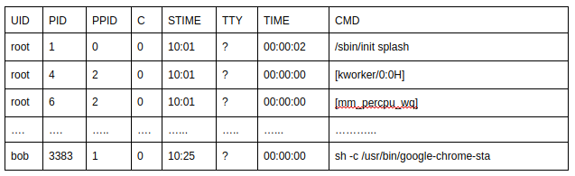
a) Quelle est la particularité de l’utilisateur “root” ?
b) Quel est le processus parent du processus ayant pour PID 3383
Dans un bureau d’architectes, on dispose de certaines ressources qui ne peuvent être utilisées simultanément par plus d’un processus, comme l’imprimante, la table traçante, le modem. Chaque programme, lorsqu’il s’exécute, demande l’allocation des ressources qui lui sont nécessaires. Lorsqu’il a fini de s’exécuter, il libère ses ressources.
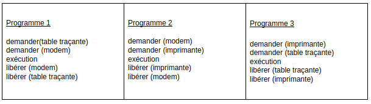
Q.2 On appelle p1, p2 et p3 les processus associés respectivement aux programmes 1, 2 et 3.
a) Justifier qu'une situation d'interblocage peut se produire.
b) Modifier l'ordre des instructions du programme 3 pour qu'une telle situation ne puisse pas se produire.
Q.3 Supposons que le processus p1 demande la table traçante alors qu'elle est en cours
d'utilisation par le processus p3. Parmi les états suivants, quel sera l'état du processus p1
tant que la table traçante n'est pas disponible :
a) élu
b) bloqué
c) prêt
d) terminé
Partie B
Avec une ligne de commande dans un terminal sous Linux, on obtient l'affichage suivant :
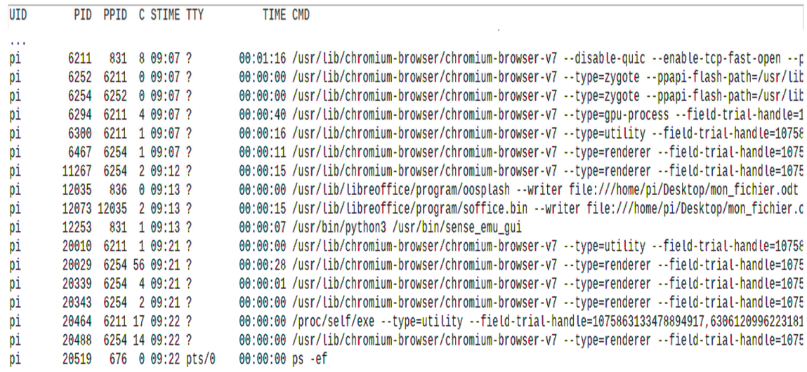
La documentation Linux donne la signification des différents champs :
- UID : identifiant utilisateur effectif ;
- PID : identifiant de processus ;
- PPID : PID du processus parent ;
- C : partie entière du pourcentage d'utilisation du processeur par rapport au temps de vie des processus ;
- STIME : l'heure de lancement du processus ;
- TTY : terminal de contrôle
- TIME : temps d'exécution
- CMD : nom de la commande du processus
Q.1. Parmi les quatre commandes suivantes, laquelle a permis cet affichage ?
a) ls -l
b) ps –ef
c) cd ..
d) chmod 741 processus.txt
Q.2. Quel est l'identifiant du processus parent à l'origine de tous les processus concernant le navigateur Web (chromium-browser) ?
Q.3. Quel est l'identifiant du processus dont le temps d'exécution est le plus long ?
Exercice 4⚓︎
Extrait sujet BAC 2021
Cet exercice porte sur la gestion des processus par un système d’exploitation.
Partie A : Processus
La commande UNIX ps présente un cliché instantané des processus en cours d'exécution.
Avec l’option −eo pid,ppid,stat,command, cette commande affiche dans l’ordre l’identifiant du processus PID (process identifier), le PPID (parent process identifier), l’état STAT et le nom de la commande à l’origine du processus.
Les valeurs du champ STAT indique l’état des processus :
- R : processus en cours d’exécution
- S : processus endormi
Sur un ordinateur, on exécute la commande ps −eo pid,ppid,stat,command et on obtient un affichage dont on donne ci-dessous un extrait.
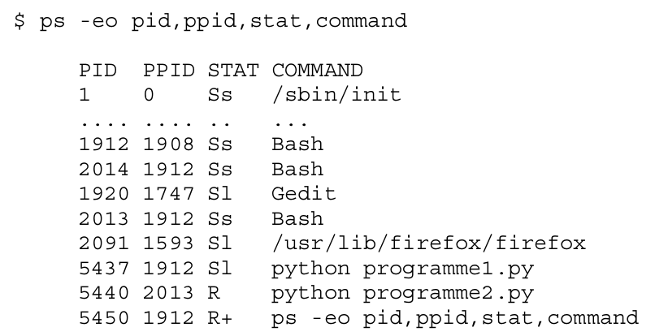
À l'aide de cet affichage, répondre aux questions ci-dessous.
Q.1. Quel est le nom de la première commande exécutée par le système d'exploitation lors du démarrage ?
Q.2. Quels sont les identifiants des processus actifs sur cet ordinateur au moment de l’appel de la commande ps ? Justifier la réponse.
Q.3. Depuis quelle application a-t-on exécuté la commande ps ?
Donner les autres commandes qui ont été exécutées à partir de cette application.
Q.4. Expliquer l'ordre dans lequel les deux commandes python programme1.py et python programme2.py ont été exécutées.
Q.5. Peut-on prédire que l'une des deux commandes python programme1.py et python programme2.py finira avant l’autre ?